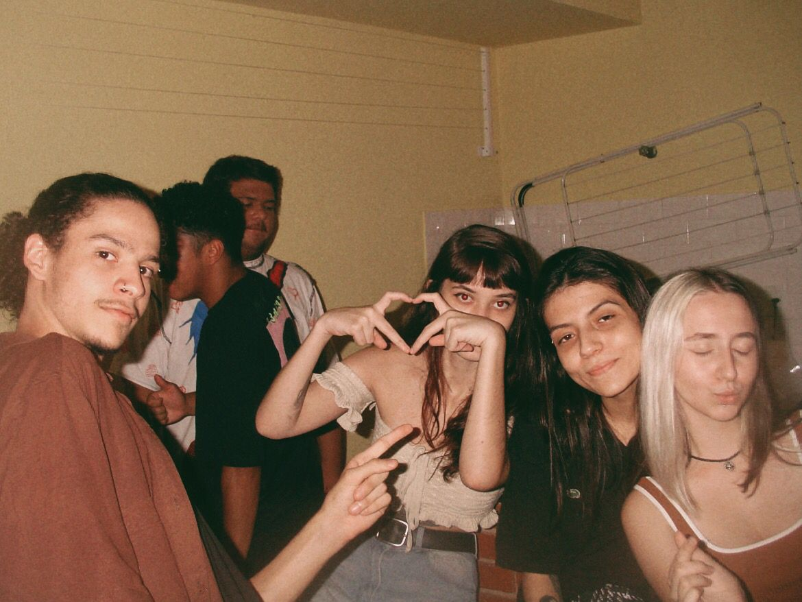
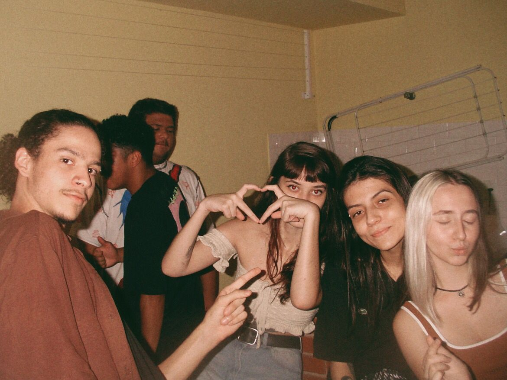
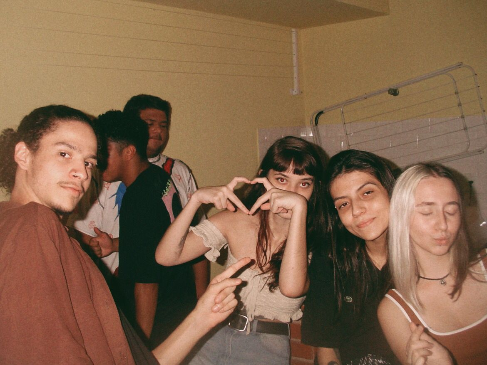

Me chamo Ana Caroline, tenho 18 anos e sou programadora Java Junior!
Estou na faculdade de Segurança da Informação, na FATEC, e faço bootcamp na Generation Brasil durante o dia. Além da programação, outra coisa me faz muito feliz, que são meus amigos! (E animaizinhos)
